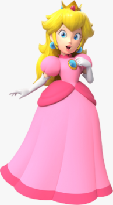

About
Name: Princess Peach Toadstool
Dedicated and compassionate leader seeking to continue promoting peace, unity, and prosperity across the Mushroom Kingdom and neighboring realms. Brings strong diplomatic skills, crisis management experience, and a commitment to the well-being of all citizens.

Skills
- Leadership & Public Speaking
- Diplomacy & Conflict Resolution Basic Magic and Healing Abilities
- Platforming & Competitive Sports
- Baking (Notably, award-winning cakes)
Education
Royal Academy of Toadstool Diplomacy
- Graduated with Honors in Governance & Magic Ethics
Mentorship in Defensive Magic & Self-Reliance
- Under the guidance of Toadsworth and E. Gadd